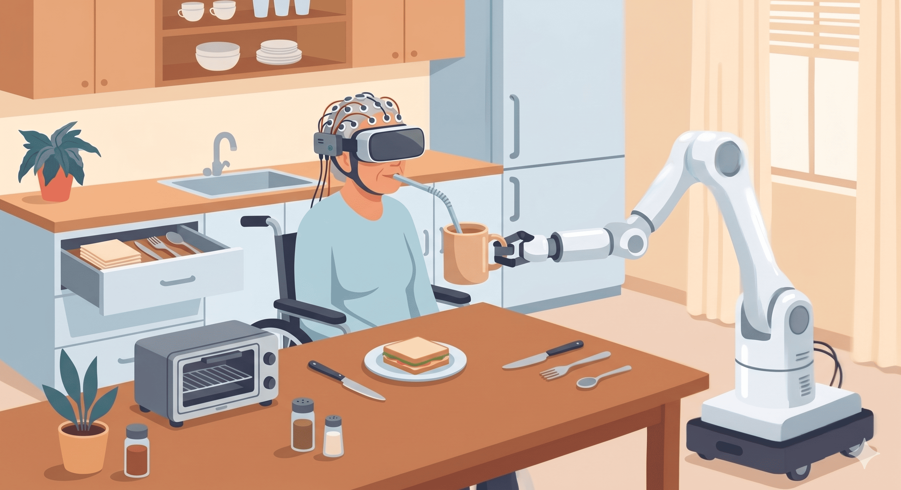
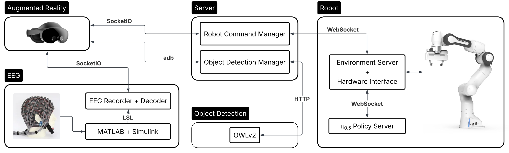
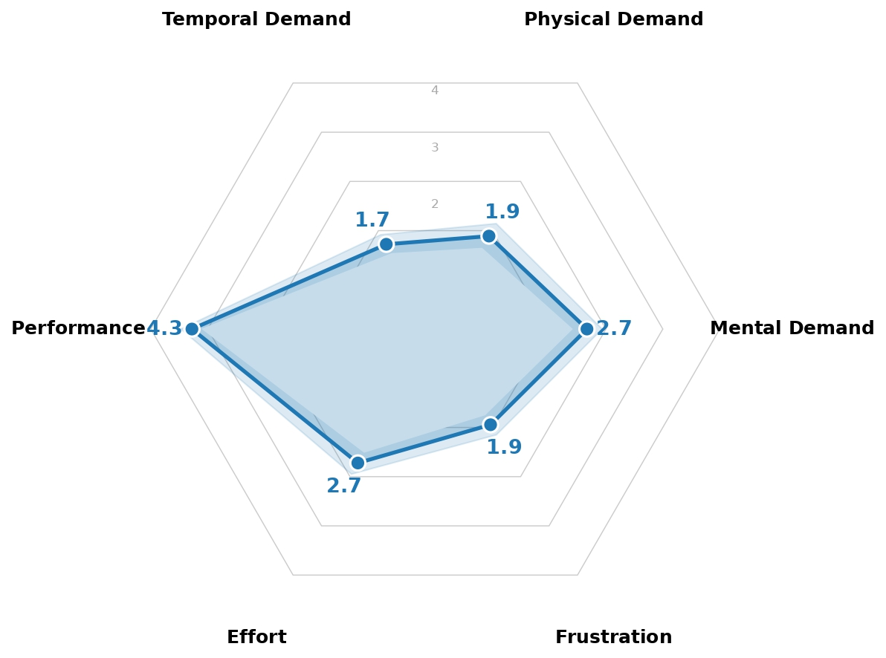
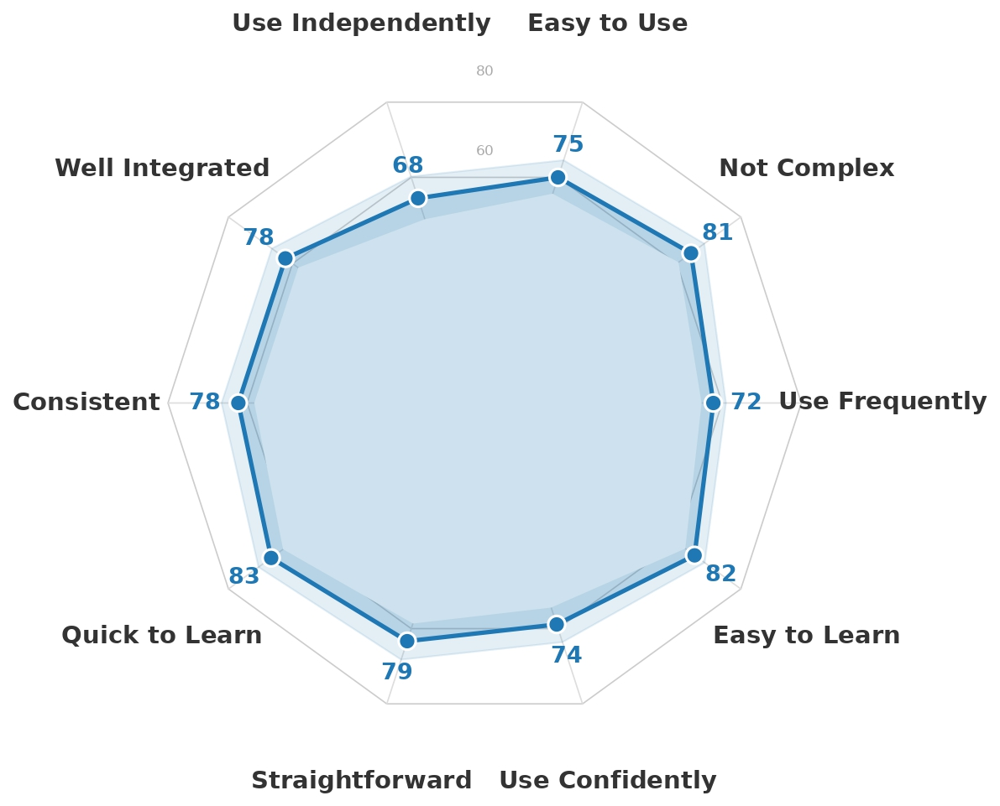

An Augmented Reality Brain-Robot Interface
for Generalist Robot Arm Manipulation
Project Overview
Abstract
We present an augmented reality brain-robot interface (AR-BRI) for generalist robot arm manipulation, combining gaze-based object selection with EEG-based motor imagery control. Our system enables intuitive interaction within a shared autonomy framework, allowing users to perform multi-step tasks directly.
We validated our system through a feasibility study with 18 healthy participants performing activities of daily living (ADLs): drinking, using a drawing, and operating and oven. We demonstrate reliable task execution, high user engagement, and good usability, highlighting the potential of the proposed approach user with motor disabilities.
Motivation
Assistive robotics aims to support individuals with physical impairments in performing activities of daily living (ADLs), such as drinking, cooking, or manipulating everyday objects. However, existing systems are often limited to predefined tasks and rely on interfaces that are not intuitive, requiring users to divide their attention between control devices and the physical environment.
In this work, we explore a more natural interaction paradigm by combining augmented reality with brain-robot interfaces. By integrating gaze-based object selection and EEG-based motor imagery control directly within the user’s environment, our system enables intuitive, hands-free interaction with a robotic arm for flexible, multi-step tasks.

User Interface
System Design

The proposed AR brain–robot interface is built around a modular system architecture that connects the augmented reality interface, EEG module, object detection module, central server, and robot module. These components communicate through dedicated channels to coordinate visual perception, neural intent decoding, object selection, and robot execution within a shared autonomy framework.
The AR headset provides the user-facing interface, combining passthrough vision, eye tracking, and spatially aligned visual feedback. Visual information from the headset is processed by the object detection module, while EEG signals are streamed to the recorder and decoder to estimate the user’s intended action. The central server coordinates these inputs through the robot command and object detection managers, then forwards the selected command to the robot module.
Through this pipeline, the user selects an object with gaze and chooses a high-level action through motor imagery, while the robot executes the corresponding manipulation policy autonomously. The overall system forms a continuous interaction loop: perceiving the environment, identifying the target object, decoding the intended action, and executing the selected robot behavior.
User Study
We conducted a user study to evaluate the effectiveness, usability, and interaction capabilities of the proposed AR brain–robot interface across realistic activities of daily living scenarios.
A total of 18 participants took part in the experiment. Each session included an EEG calibration phase for training a user-specific decoder, followed by a short familiarisation stage with the interaction pipeline and AR interface.
Participants were then asked to complete three multi-step manipulation tasks: a Drinking Task, a Drawer Task, and an Oven Task. These tasks were designed to evaluate sequential robot manipulation, object interaction, and high-level action selection in realistic household scenarios.
To assess the proposed framework, we collected metrics including task success rate, execution time, completion time, and EEG decoding performance. In addition, participants completed the System Usability Scale (SUS) and the NASA Task Load Index (NASA-TLX) questionnaires to evaluate perceived usability and workload.
Tasks
Participants were asked to perform three multi-step manipulation tasks inspired by activities of daily living. These tasks were designed to reflect common household interactions.
Each task required users to sequentially select objects and trigger high-level actions through the AR interface, while the robot autonomously executed the corresponding manipulation policy.
Drinking Task
Video sped up for display
Drink and place the mug in the rack
Drawer Task
Video sped up for display
Open the drawer and place the spoon inside
Oven Task
Video sped up for display
Open the oven and place the plate inside
Results
The results show that the proposed AR brain–robot interface supported effective sequential task execution across three activities of daily living. Participants completed the manipulation tasks with high success rates, consistent execution times, and good usability, while workload remained moderate and mainly related to the cognitive demands of EEG-based control.
Robot and System Performance
We evaluated robot and system performance through subtask success rate, execution time, overall task completion time, task success, and EEG decoder performance. Across all three tasks and eight subtasks, the system demonstrated consistent and reliable performance, supporting its viability for real-world assistive manipulation scenarios.
Both the Drawer and Oven tasks were completed with a 100% success rate. The Drink task failed twice due to robot failure during the Place Mug subtask. Most policies showed low variability in execution time, while the Open subtasks had higher variability, reflecting the difficulty of finding a secure grasp for opening.
For EEG-based intent decoding, offline classification achieved a mean training/validation accuracy of 0.69 ± 0.16 and a test accuracy of 0.70 ± 0.17, evaluated using stratified 5-fold cross-validation. Online decoding accuracy improved to 0.86 ± 0.23, attributable to the sliding window scheme used during online decoding and the gaze-based error recovery mechanism.
| Task | Subtask | Success | Execution Time | Task Completion Time |
|---|---|---|---|---|
| Drink | Use Mug | 1.0 (18/18) | 18.2 ± 1.6 s | 112.2 ± 24.6 s |
| Place Mug | 0.9 (18/20) | 20.9 ± 3.2 s | ||
| Drawer | Open Drawer | 1.0 (18/18) | 18.8 ± 4.5 s | 131.9 ± 30.6 s |
| Place Spoon | 1.0 (18/18) | 17.3 ± 1.4 s | ||
| Close Drawer | 1.0 (18/18) | 8.7 ± 0.8 s | ||
| Oven | Open Oven | 1.0 (18/18) | 14.1 ± 5.2 s | 115.9 ± 15.3 s |
| Place Plate | 1.0 (18/18) | 20.2 ± 1.4 s | ||
| Close Oven | 1.0 (18/18) | 11.3 ± 0.8 s |
System Usability and Workload Evaluation

NASA-TLX
Workload Analysis
The NASA-TLX results indicate a
moderate cognitive workload associated with the proposed
AR brain–robot interface. Among the workload components,
mental demand and effort were the dominant
contributors, reflecting the sustained cognitive engagement
required for EEG-based interaction. In contrast,
physical and temporal demand remained relatively
low, consistent with the passive and hands-free nature of the
gaze- and MI-driven interaction paradigm.
Participants also reported relatively low levels of frustration
and high perceived task performance, suggesting that the system
remained understandable and manageable despite the cognitive
demands introduced by motor imagery control.

SUS
Usability Evaluation
The proposed system achieved an overall
System Usability Scale (SUS) score of 76.94,
corresponding to a “Good” usability rating.
Participants reported that the system was easy to learn,
straightforward to use, and well integrated across its multiple
interaction modalities.
The highest-rated usability components were related to ease of
learning and interaction simplicity, while lower scores were
associated with independent system usage, reflecting the level
of expertise currently required for EEG calibration and system
operation. Overall, the SUS results suggest a positive user
experience and support the usability of the proposed AR
interaction framework for assistive robot control.
Takeaways
Key insights from the proposed AR brain-robot interface:
- Effective sequential control: Users were able to complete multi-step activities of daily living through the proposed AR brain–robot interface.
- High task performance: The system achieved near-perfect subtask success rates and consistent execution times across the evaluated tasks.
- Good usability: Participants rated the system positively, with a SUS score of 76.94, corresponding to a “Good” usability range.
- Moderate cognitive workload: EEG-based control required sustained cognitive engagement, while physical and temporal demands remained low.
- Engaging interaction: Participants responded positively to the combination of real-world object interaction, AR feedback, and robot execution.
- Future validation needed: The system was tested with healthy participants, so further evaluation with the intended user population is needed.